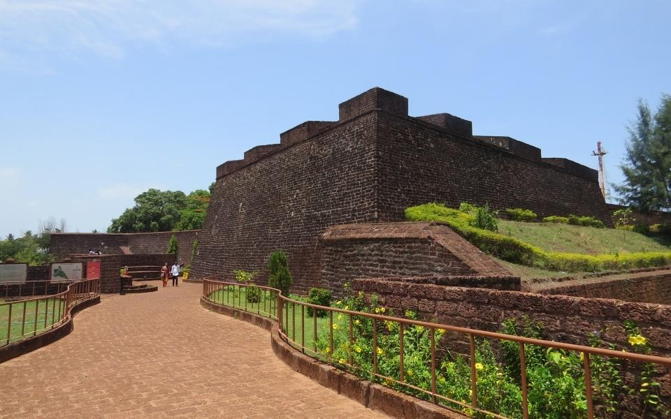

Payyambalam Beach
Payyambalam beach is a beautiful spot located in the district of Kannur. It is one among the five beaches that is collectively
known as Kannur beach. Long stretch of sandy walkways and recreational facilities of this beach make is a favourite hang out.
1 / 3

2 / 3

Arakkal Museum
The Arakkal Museum is a museum dedicated to the Arakkal family, the only Muslim royal family in Kerala, India. The museum is actually a section of the Arakkalkettu. The durbar hall section of the palace has been converted into a museum by the Government of Kerala.
The Arakkal Museum is a museum dedicated to the Arakkal family, the only Muslim royal family in Kerala, India. The museum is actually a section of the Arakkalkettu. The durbar hall section of the palace has been converted into a museum by the Government of Kerala.
3 / 3

Kannur Fort
St. Angelo's Fort, popularly known as the Kannur Fort, is a massive triangular laterite fort and is among the most historic sites in Kannur. Constructed by the first Portuguese Viceroy, Don Francesco de Almeida in 1505, the fort is flanked by gigantic bastions that make for an imposing sight.
St. Angelo's Fort, popularly known as the Kannur Fort, is a massive triangular laterite fort and is among the most historic sites in Kannur. Constructed by the first Portuguese Viceroy, Don Francesco de Almeida in 1505, the fort is flanked by gigantic bastions that make for an imposing sight.